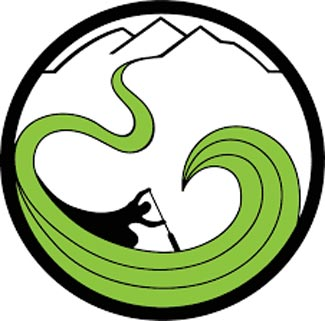

Site Name
The Green River Rafting Company
Site Purpose
This site should tell customers about the services the rafting Company provides. Information on the types of rafts and the equipment included in the rental. Rental pricing, availability, and hours of service. Shuttle service to the drop off and pick up locations. The contact numbers and information on how to book rentals. Directions on how to get to the raft rental location.
Audience
The Green River Rafting Company plans adventures for the whole family to enjoy. We also like to aid youth groups in trips down the river. Our focus is on a safe adventure on the river for everyone. The section of the river we run is mostly calm with several rapid areas, making it enjoyable and safe for all age groups.
Logo
Color Scheme
The background behind the page will be a light grayish-green color, the main body copy will be in a grayish-brown, the header and footer will be in a forest green color, and the words, headings and titles will be in white.

Typography
Typeface - Barlow Condensed. Regular for the body copy, Medium for Sub-headings, and Bold for Headings and Title. All text will be in white. See above style guide.